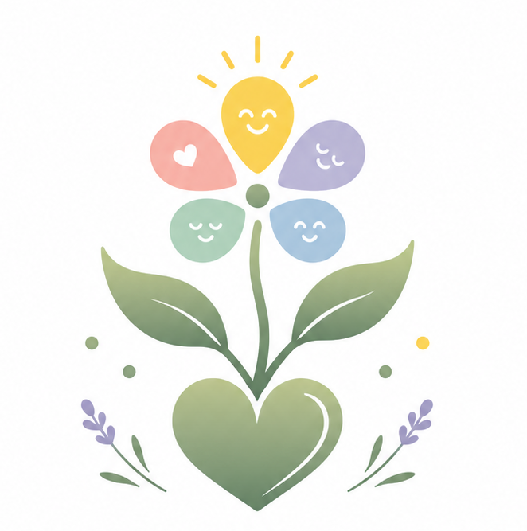

행복
밝은 기분은 해바라기처럼 크게 피어납니다.

MoodGarden감정을 심고, 하루를 키우다
지금의 감정을 식물로 표현하고 성장 과정을 기록하여, 바쁜 일상 속에서 스스로의 마음을 돌아볼 수 있는 감정 정원 서비스입니다.
Mood Cards
밝은 기분은 해바라기처럼 크게 피어납니다.
차분한 하루는 라벤더처럼 은은하게 자랍니다.
지친 감정은 이끼처럼 천천히 회복됩니다.
무거운 마음은 수국처럼 부드럽게 머뭅니다.
날카로운 감정은 선인장으로 안전하게 표현됩니다.
Why MoodGarden?
대학생들은 학업, 진로, 인간관계 등 다양한 고민 속에서 감정 관리를
필요로 하지만,
무거운 심리검사나 전문적인 상담은 부담스럽게 느끼는
경우가 많습니다.
MoodGarden은 사용자의 감정을 식물의 형태로 시각화하고,
이를 직접 돌보는 놀이 활동을 통해 부담 없이 자신의 마음을
돌아볼 수 있도록 돕습니다.
추상적인 감정을 식물로 표현하여 현재의 마음 상태를 한눈에 확인할 수 있습니다.
복잡한 심리검사 대신 간단한 감정 입력만으로 하루의 감정을 기록할 수 있습니다.
식물을 성장시키는 과정을 통해 자연스럽게 자신의 감정을 돌보고 관리할 수 있습니다.
Growth Flow
사용자는 감정과 강도를 입력하고, 생성된 식물을 감정별 돌봄 액션으로 키우며 자신의 하루를 시각적으로 확인합니다.